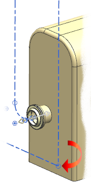
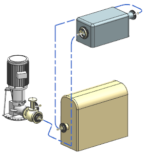
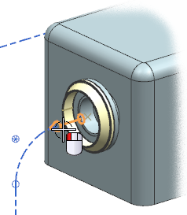

选择一个管道三通
下面，您将在 管线的接合处放置一个管道三通。

您需要查找符合下列特性值的三通：
|
接头材料(Fitting Material) |
= |
ST37–2 |
|
NPS |
= |
300 |

-
右击视图背景并选择定向视图→定制视图→TFR_1。

-
点击关闭。
-
选择放置部件
 。
。 -
展开：
管线部件库
→管道部件
→接头(Fittings)
→三通(Tee) -
右击DIN2615并选择搜索子项。
将从前一个部件选择中自动加载下列特性：
NPS
250
但是您需要选择的是 NPS 300，您可以选择一个. NPS 300法兰的端口来修改 NPS 值。
-
选择属于 NPS 300 法兰的端口。

将会从端口特性中读取 NPS 值。
-
选择 FITTING_MATERIAL 行。
-
在 FITTING_MATERIAL 列表中，选择 ST37–2。
-
点击确定。
-
在成员视图列表框中，选择 T_300_300，然后点击确定。